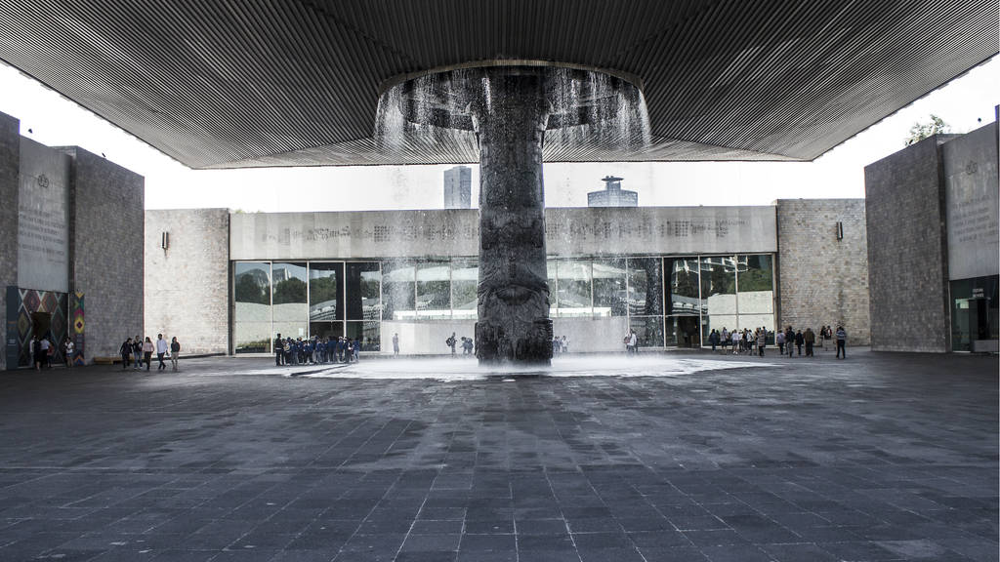
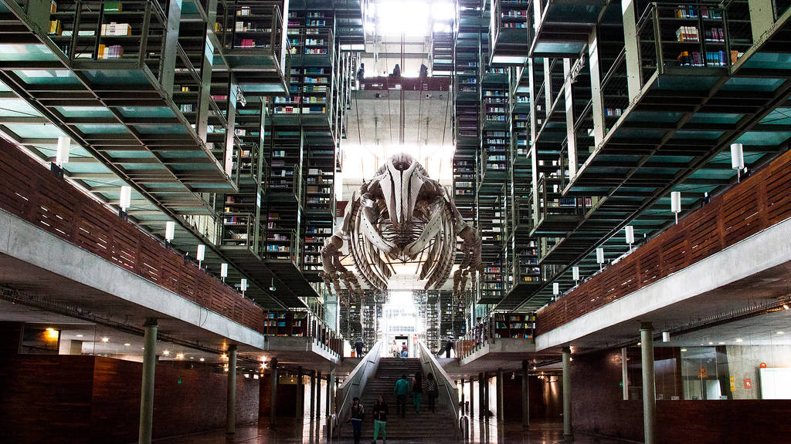

CDMX
Museo Nacional de Antropología (MNA)
-
- La mayoría visitamos el Museo Nacional de Antropología por primera vez para cumplir con la tarea en la primaria, es un básico cuando se trata de aprender de las culturas prehispánicas, en su acervo incluye colecciones arqueológicas y etnográficas del país. Vale la pena revisitar el museo, esta vez sin la presión de apuntar toda la información de las fichas informativas.
- Imagen de Museo Nacional de Antropología:

Biblioteca Vasconcelos
- Esta obra que Alberto Kalach realizó en 2007 me parece uno de los mejores edificios públicos que se han realizado en este siglo, el espacio interior es realmente sorprendente. Parece que uno entrara en una nueva catedral del siglo XXI, es imponente la quíntuple o séxtuple altura que tiene y este gran espacio que se extiende a todo lo largo con un pasillo interno en donde se ven como descolgados todos los libreros, suspendidos en una estructura. Es una impresión increíble de grandeza y generosidad que se da en ese espacio de la biblioteca, me parece fundamental que la gente lo visite.
